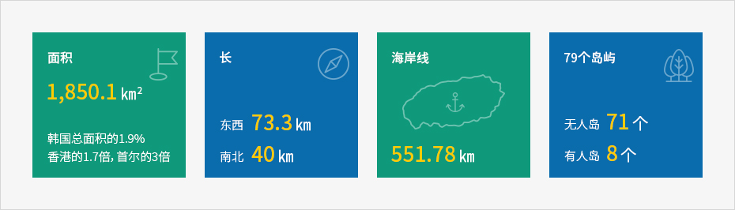
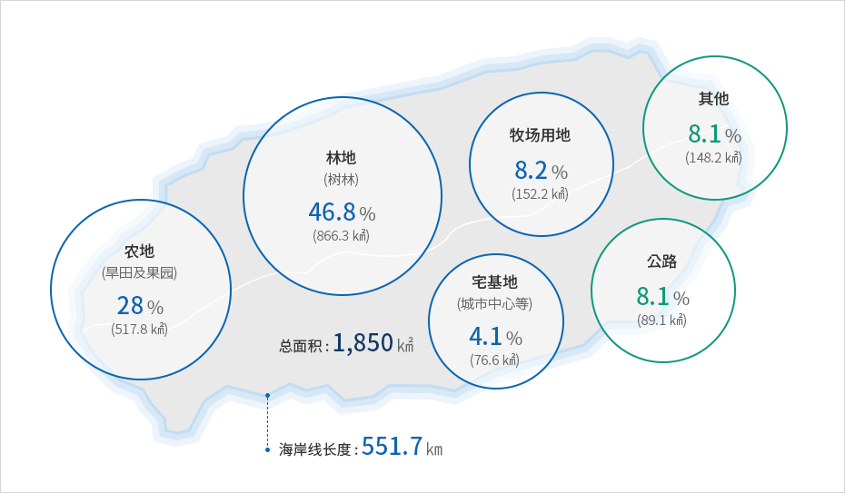

济州岛的地理及地质情况
- Home
- 基础情况
- 地理
- 济州岛的地理及地质情况
地形地质
汉拿山耸立于岛屿中央，四周分布着山林、溪谷、山丘、火山口、洞穴、草原等地形，动植物丰富多样，自然景观宛若鬼斧神工，共同造就得天独厚的美丽风景。四面环海，海边满是奇岩怪石、瀑布、沙滩、小岛，自成绝景。


- 면적 16℃ - 전국의 1.9%, 홍콩의 1.7배, 서울의 3배
- 길이 - 동서 73.3㎞, 남북 40㎞
- 해안선 - 551.78㎞
- 79개의 섬 - 무인도 71개, 유인도 8개

岛中央以汉拿山为中心，东西呈3°~5°左右的斜坡地形。
整个岛由堆积岩层和玄武岩等火山岩类，以及单成火山喷出的火山碎屑岩等组成，除部分地方的粘沙质土壤外，岛上大部分区域被黑褐色火山灰土覆盖。
土地分类及海岸线
